已接入真实应用路由的截图与录屏，不是新画的静态设计稿。统一顶部窗口栏、圆角内框、可收起导航和底部个人空间；保留之前确认的页面与原图标。
左上角留白供 macOS 原生红黄绿按钮使用。按钮由系统绘制，独立 Chromium 证据不会伪造它们。Rust 测试不等于原生窗口验收；这轮没有发布或替换本地 App。
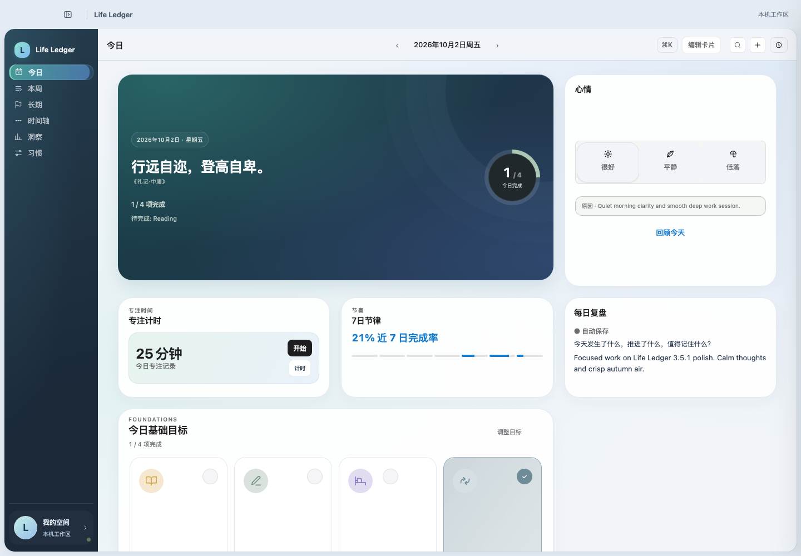
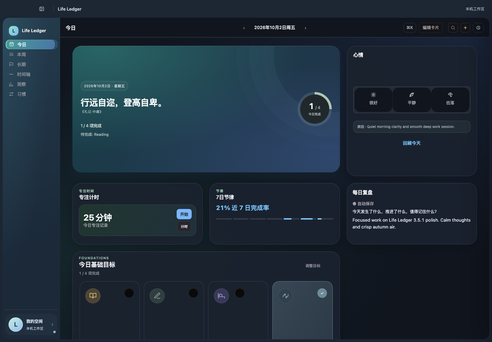
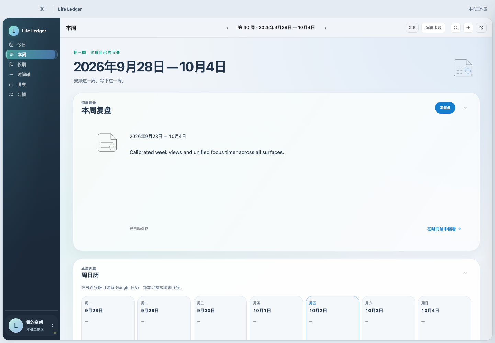
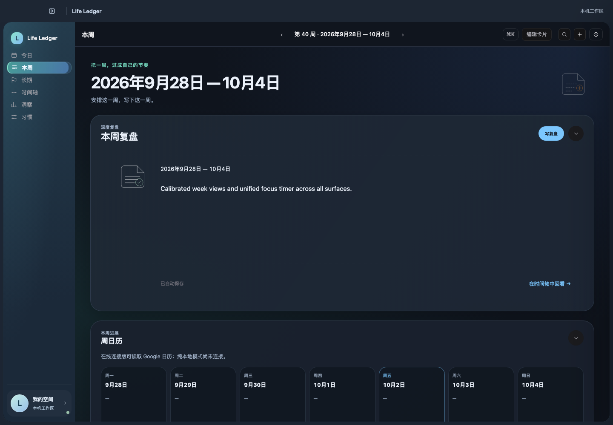
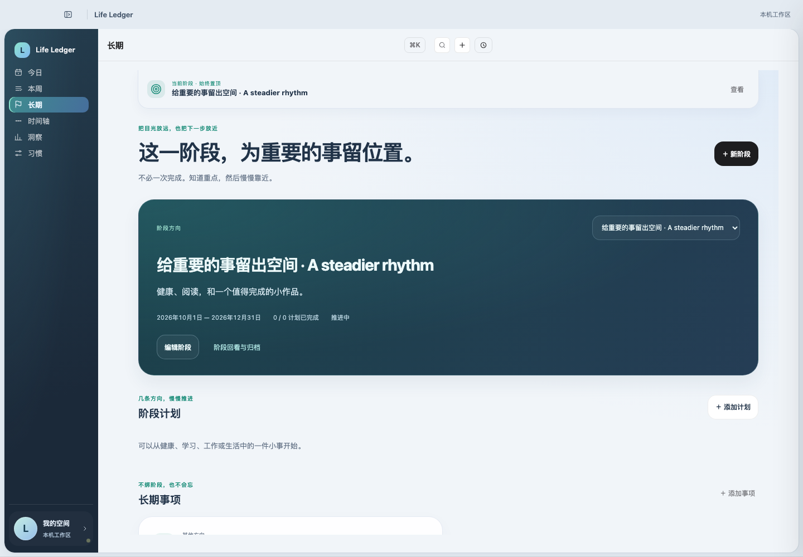
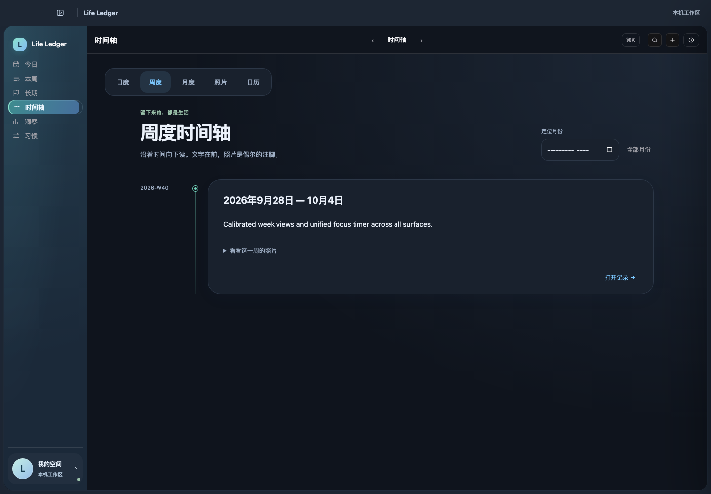
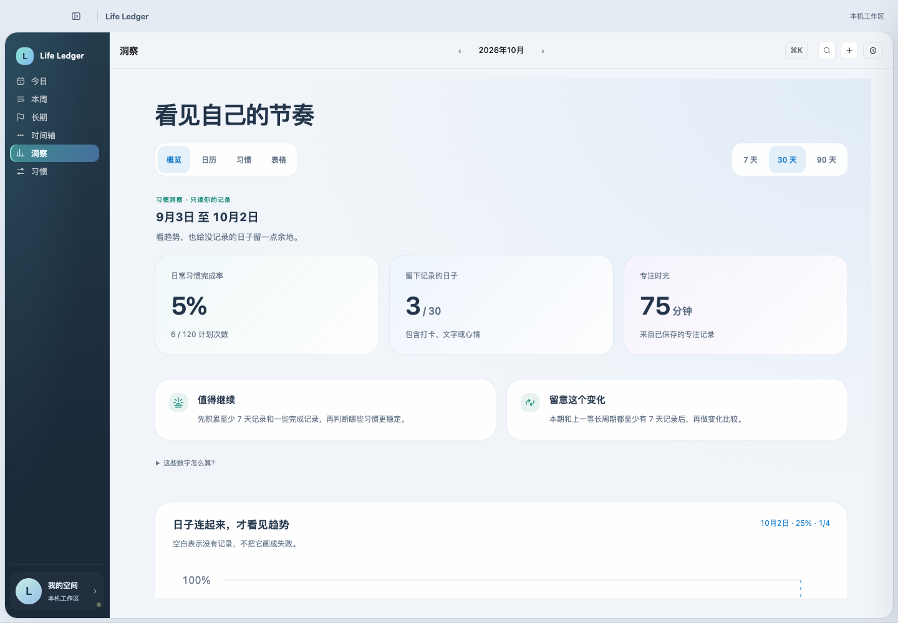
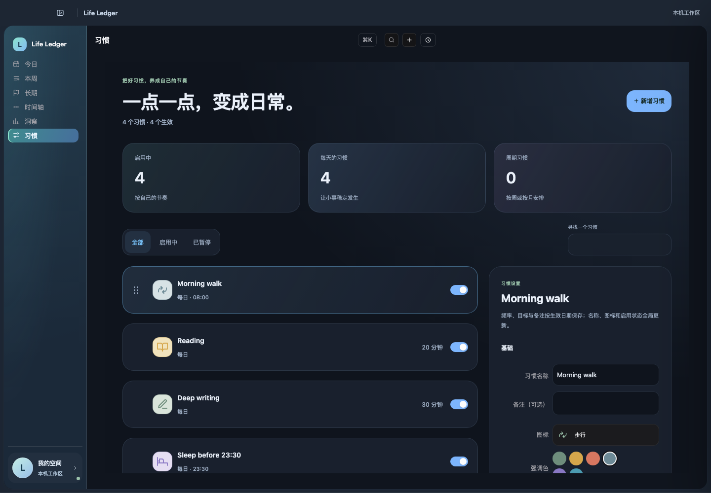
可选头像、移除头像、修改显示名称；图片在设备上裁切压缩，不上传。这是设备外观，不是登录认证，也不修改云端记录。头像与名称不包含在数据备份中。
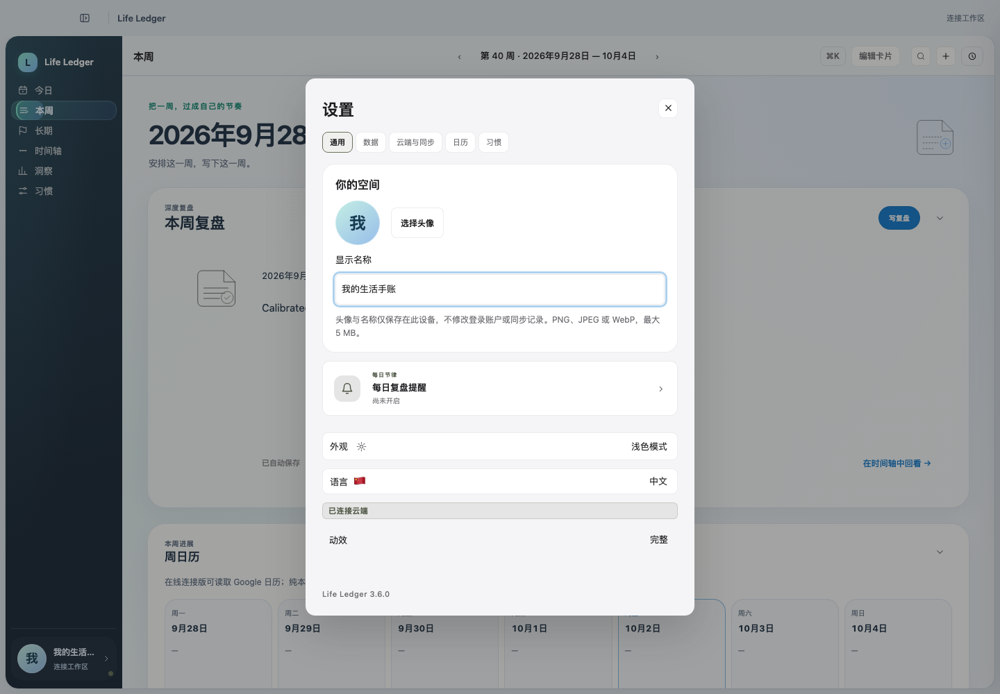
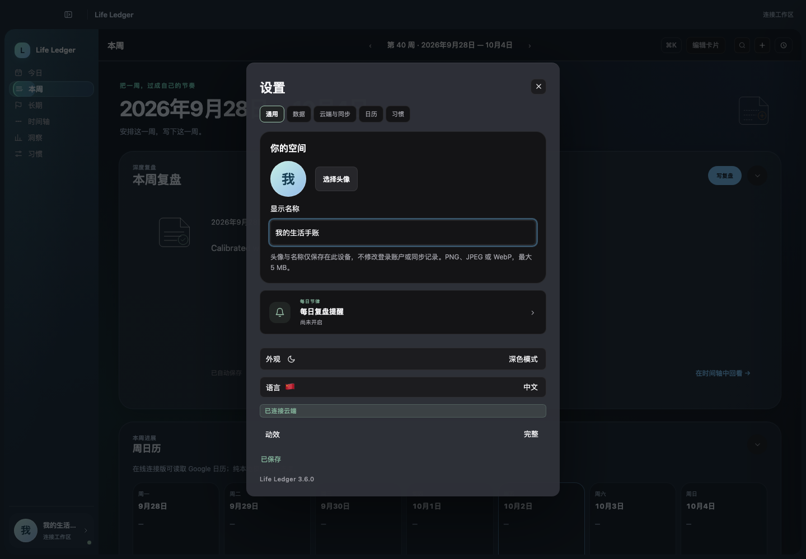
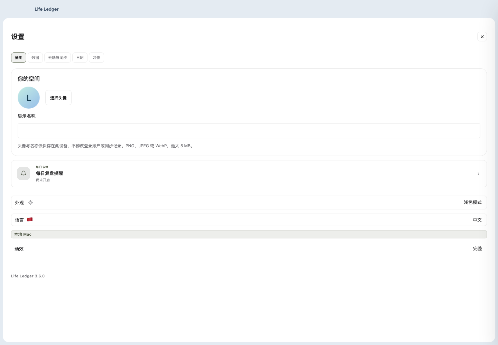
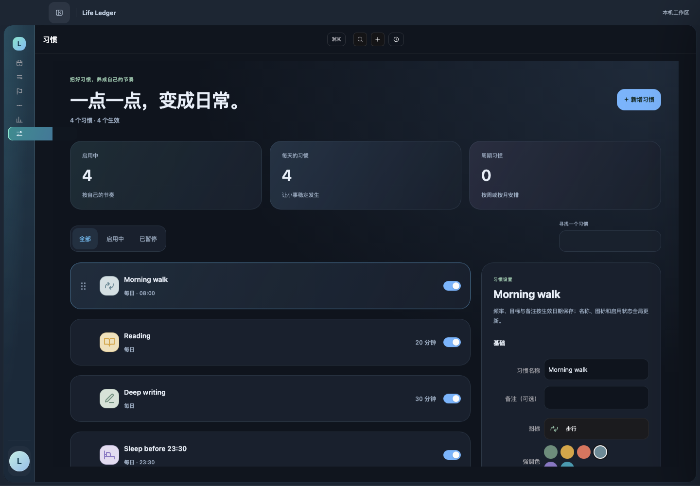
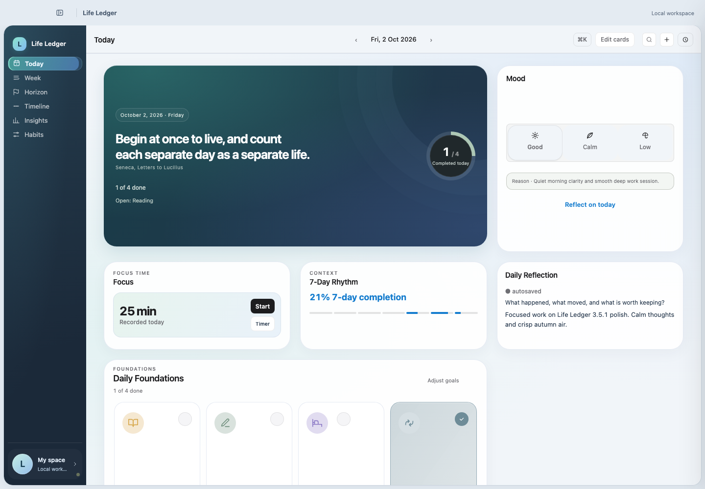
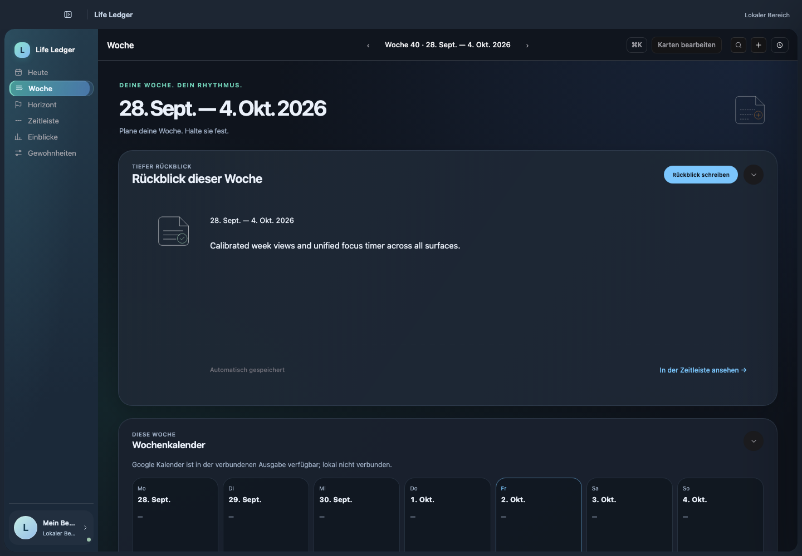
网页端不额外添加 Mac 顶栏；移动导航保留。
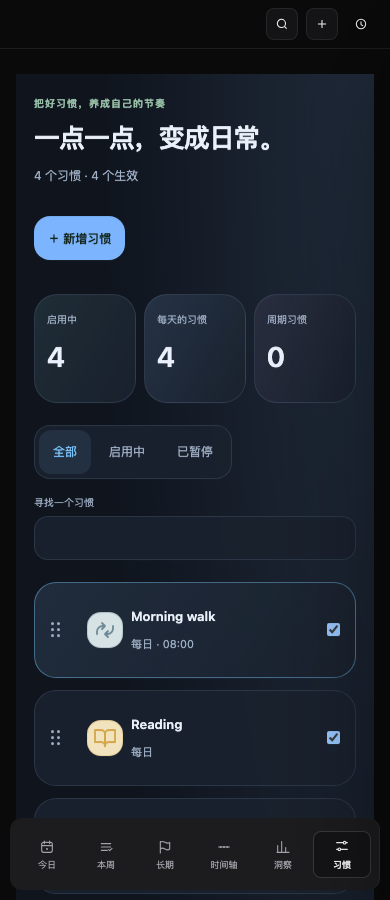